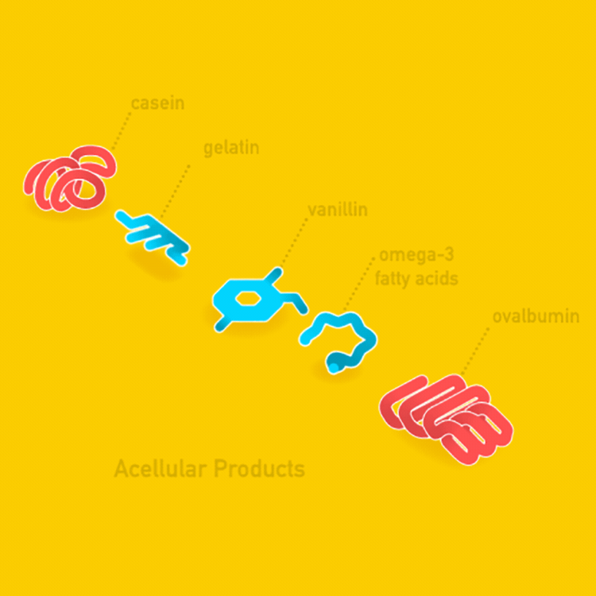
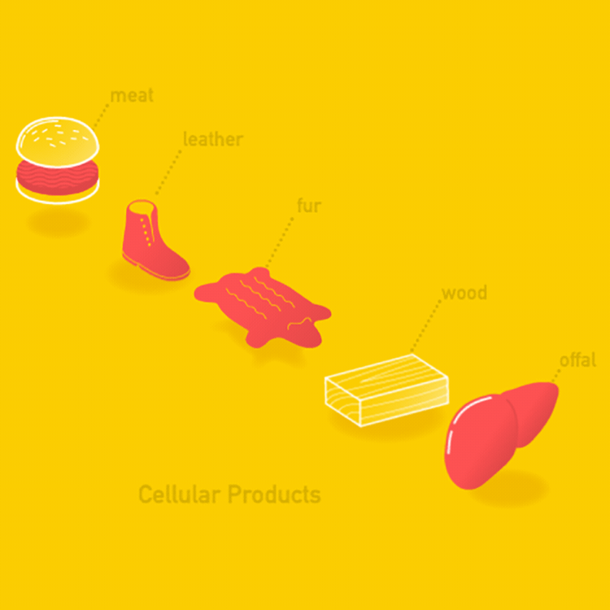

Cellular agriculture currently comprises two different approaches: cell cultivation (cellular) and precision fermentation (acellular).
 
The cell-cultivation method refers to growing meat directly from cells. Cells are the building blocks of all life. By cultivating them to produce meat and seafood, the raising and slaughtering of animals can be avoided. To produce cultured meat and seafood, stem cells are initially sampled from animals through a painless biopsy.These cells are then fed with nutrients in large vats, also known as cultivators, where they multiply and differentiate. As they grow, they become muscle tissue, which is the main component of meat. A number of startups and companies are currently working on developing a variety of cultured foods, including beef, pork, chicken, fish, seafood, milk, and cheese.
The precision-fermentation method refers to the use of microorganisms rather than cell cultures to produce products such as milk and egg-white proteins. These products can be grown directly from microorganisms such as yeast in a similar fermentation process to that which has been used for many years in the food industry to produce enzymes such as rennet (a key ingredient to produce cheese) or vanillin (the main component of vanilla flavor), as well as other products. Startups and companies are currently working to develop milk, ice cream, cheese, gelatin, and egg-white. Some products have already been commercialized, such as Greater’s ice cream, which uses Perfect Day’s flora-based dairy proteins. The final products aim to resemble conventional meat, eggs, and dairy in terms of taste and structure while offering significant benefits for human health, the environment, and animal welfare.